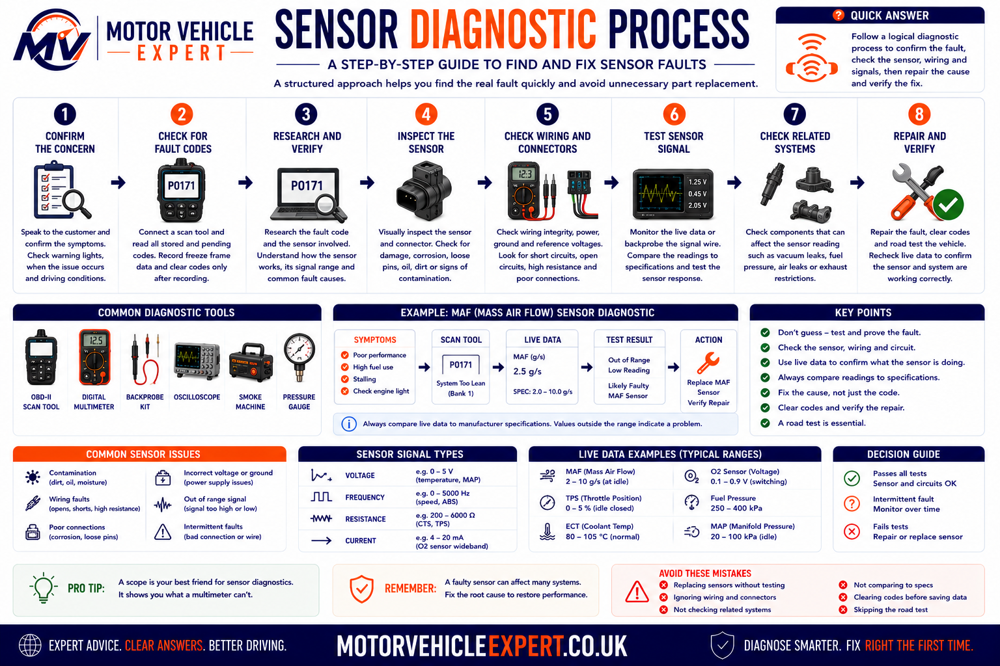

What do car sensors do?
Car sensors measure physical or electrical conditions around the vehicle and convert those measurements into signals that an electronic control unit can understand. The ECU uses this information to calculate how much fuel to inject, when to produce an ignition spark, how far to open the throttle, when to operate cooling fans and whether emissions systems are working correctly.
Sensors are input devices. They do not normally control injectors, ignition coils, valves or electric motors directly. Instead, they report what is happening so the ECU can decide how to operate those output devices.
1. Measure conditions
Sensors measure temperature, pressure, airflow, oxygen content, rotational speed, component position and vehicle movement.
2. Send live data
The measurement is converted into a voltage, frequency, resistance or digital signal and sent to the relevant electronic control unit.
3. Support ECU decisions
The ECU compares sensor data with its programmed maps before controlling fuel injection, ignition timing, boost pressure, cooling and emissions.
Sensors should be treated as part of a complete circuit rather than as isolated components. A sensor can only work correctly when it has the correct power supply, earth, reference voltage, signal path and mechanical input. Testing all five prevents unnecessary replacement.
Start with the symptom before replacing a sensor
Sensor faults can produce many different symptoms, including poor starting, hesitation, stalling, excessive fuel consumption, reduced power, irregular idling and dashboard warning lights. Start by identifying when the fault occurs and which systems are affected before purchasing replacement parts.
Describe the problem
Record whether the fault occurs when the engine is cold, hot, accelerating, idling, braking or travelling at a particular road speed.
- ✓ Warning lights
- ✓ Poor starting
- ✓ Power loss
- ✓ Irregular idle
Use guided diagnosis
The Motor Vehicle Expert Diagnostic App helps drivers organise symptoms, warning lights and operating conditions before deciding whether a vehicle needs urgent inspection.
Online guidance can help narrow down likely fault areas, but it cannot confirm sensor voltage, wiring continuity, mechanical condition or ECU communication. Safety-related and persistent faults still require proper testing.
Why technicians test the circuit before replacing a sensor
A diagnostic trouble code normally identifies the circuit, signal or operating condition that the ECU considers abnormal. It does not automatically identify the failed component. For example, a mass airflow sensor code may be caused by an intake air leak, blocked air filter, damaged wiring, poor earth connection or incorrect airflow created by an engine fault.
Professional diagnosis follows the complete signal path. The technician confirms that the sensor is receiving the correct supply, checks its earth path, measures the output signal and compares the result with scan-tool live data and known operating values.
1. Confirm the symptom
Reproduce the fault where possible and identify the exact operating conditions that cause it.
2. Read fault information
Check stored and pending fault codes, freeze-frame information and live sensor data.
3. Test the circuit
Confirm power supply, earth integrity, reference voltage, resistance, continuity and signal behaviour.
4. Prove the repair
Clear relevant codes, repeat the operating conditions and verify that live data and vehicle behaviour have returned to normal.
A code describing a sensor signal as low, high, implausible or intermittent may be caused by the sensor, its connector, the wiring loom, an ECU supply fault or the physical system being measured. Replacing the named sensor without testing can leave the original fault unchanged.
What are car sensors?
A car sensor is a device that detects a physical condition and converts it into electrical information. Depending on its design, the sensor may alter resistance, produce its own voltage, switch a circuit on and off, change signal frequency or transmit digital data over a vehicle network.
Modern vehicles use sensors throughout the engine, transmission, braking, steering, suspension, climate-control and safety systems. Some provide continuous measurements, while others only report whether a component has reached a particular position or operating state.
Analogue sensors
Analogue sensors produce a continuously changing voltage or resistance. The ECU interprets that change as temperature, pressure, position or load.
Digital sensors
Digital sensors switch rapidly between defined electrical states or send coded data. They are commonly used for speed, position and networked measurements.
Self-generating sensors
Some sensors generate their own electrical signal from movement, vibration, heat or oxygen differences rather than relying only on an external supply.
Thermistors
Temperature-sensitive resistors used in coolant, intake-air and ambient temperature sensors.
Hall-effect sensors
Electronic sensors that detect magnetic field changes and produce a clear digital position or speed signal.
Inductive sensors
Magnetic sensors that generate an alternating voltage as a toothed wheel or target passes the sensing tip.
Pressure transducers
Sensors that convert manifold, fuel, oil, exhaust or air-conditioning pressure into an electrical signal.
Sensors provide the input side of an electronic control system. The ECU processes those inputs and controls output devices such as injectors, ignition coils, valves, motors, relays and warning lights.
A sensor reports a measured condition. A switch normally reports a simple on-or-off state. An actuator performs a physical action after receiving a command from the ECU. Correctly identifying which type of component is being tested is an essential first step in diagnosis.
Why Modern Cars Need So Many Sensors
An electronic control unit cannot directly see engine temperature, measure intake airflow or determine how quickly a wheel is rotating. It depends on sensors positioned throughout the vehicle to convert physical conditions into electrical information.
Modern cars require more sensors than older vehicles because engine management, emissions control, automatic transmissions, ABS, stability control, climate systems and driver-assistance features all depend on accurate real-time data. The more precisely a control unit understands operating conditions, the more accurately it can control the vehicle.
Engine performance
Sensors allow the ECU to adjust fuel injection, ignition timing, turbocharger boost, throttle position and variable valve timing as operating conditions change.
Fuel efficiency
Airflow, oxygen, pressure and temperature measurements help the ECU deliver the correct amount of fuel instead of relying on a fixed setting.
Engine protection
Temperature, oil-pressure, knock and boost sensors help control units recognise conditions that could cause overheating, detonation or mechanical damage.
Emissions control
Oxygen, exhaust-temperature, differential-pressure and NOx sensors help the vehicle monitor combustion and emissions-treatment systems.
Braking and stability
Wheel-speed, steering-angle, yaw-rate and acceleration sensors allow ABS and stability-control systems to recognise wheel slip and vehicle movement.
Driver information
Sensor data supports dashboard gauges, warning lights, service messages and diagnostic trouble codes that alert the driver to developing faults.
A single sensor signal may be shared by multiple control units. For example, wheel-speed information can be used by ABS, traction control, stability control, hill-start assistance, automatic transmission logic and some driver-assistance systems. One fault can therefore trigger several warning lights at the same time.
Main Types of Car Sensors
Vehicle sensors can be grouped according to the condition they measure. Understanding these categories helps explain why similar diagnostic methods can be used across different systems.
Temperature sensors
Measure coolant, engine oil, intake air, fuel, exhaust gas, ambient air and cabin temperatures.
Pressure sensors
Monitor manifold pressure, turbocharger boost, fuel pressure, oil pressure, exhaust pressure and air-conditioning pressure.
Position sensors
Report the position of the crankshaft, camshaft, throttle, accelerator pedal, steering wheel and other moving components.
Speed sensors
Measure engine speed, wheel speed, gearbox shaft speed, turbocharger speed and vehicle road speed.
Flow sensors
Measure the amount of air or fluid passing through a system, with the mass airflow sensor being the most familiar example.
Gas sensors
Analyse oxygen, nitrogen oxide and other exhaust-gas conditions to help manage combustion and emissions treatment.
Level sensors
Monitor fuel, coolant, engine oil, screenwash, brake fluid and AdBlue levels where the vehicle is equipped with them.
Motion sensors
Measure acceleration, rotation, body movement and vehicle direction for stability control, airbags and driver-assistance systems.
Although the sensors perform different jobs, diagnosis usually begins with the same basic checks: power supply, earth, signal quality, wiring condition and whether the physical system being measured is operating correctly.
Engine Management Sensors Explained
The engine management ECU combines information from many sensors before controlling fuel injection, ignition timing, throttle operation, boost pressure, exhaust-gas recirculation and cooling. No single reading is normally used in isolation.
Crankshaft position sensor
Reports crankshaft speed and position. The ECU uses this signal to identify engine speed and determine when ignition and fuel injection should occur.
Camshaft position sensor
Identifies camshaft position so the ECU can recognise individual cylinders, control sequential injection and monitor variable valve timing.
Knock sensor
Detects combustion vibration associated with detonation. The ECU can reduce ignition advance to help protect the engine.
Coolant temperature sensor
Helps the ECU control cold-start enrichment, cooling fans, idle speed, emissions strategy and dashboard temperature information.
Throttle position sensor
Reports throttle opening. On electronic throttle systems, position sensors are normally built into the throttle body and monitored for agreement.
Accelerator pedal sensor
Converts pedal movement into an electrical request for engine torque. Most systems use two signal tracks for safety monitoring.
Crankshaft and camshaft signals must remain correctly synchronised. A correlation fault may be caused by a failed sensor or damaged wiring, but it can also indicate stretched timing components, incorrect mechanical timing or a damaged reluctor wheel.
Air Intake Sensors
The ECU must estimate how much oxygen is entering the engine before it can calculate fuel quantity. Air-intake sensors provide information about airflow, air temperature, manifold pressure and turbocharger boost.
Mass airflow sensor
The MAF sensor measures the mass of air entering the engine. Its reading is used to calculate engine load and fuel quantity.
Common symptomHesitation, poor fuel economy, reduced power or irregular idle.
Manifold pressure sensor
The MAP sensor measures pressure inside the intake manifold. It helps the ECU estimate engine load and monitor turbocharger boost.
Common symptomIncorrect boost control, smoke, poor acceleration or reduced-power mode.
Intake-air temperature sensor
Measures incoming air temperature so the ECU can compensate for changes in air density. It may be combined with the MAF or MAP sensor.
Common symptomCold-start issues, poor mixture control or implausible live-data readings.
Boost-pressure sensor
Monitors pressure within the turbocharger intake system and allows the ECU to compare requested boost with actual boost.
Common symptomUnderboost, overboost, warning lights or restricted performance.
Barometric-pressure sensor
Measures atmospheric pressure so engine management can compensate for altitude and changing ambient conditions.
Common symptomIncorrect load calculations or implausible pressure correlation faults.
Air-filter restriction sensing
Some vehicles monitor intake restriction or compare airflow and pressure readings to identify a blocked filter or restricted intake.
Common symptomReduced airflow, poor acceleration and increased fuel consumption.
A sensor may report incorrect airflow because unmetered air is entering through a split hose, loose clamp, leaking inlet manifold or crankcase ventilation fault. The sensor can be reporting the problem accurately without being defective.
Fuel System Sensors
Modern petrol and diesel engines operate within tightly controlled fuel pressure ranges. Sensors allow the ECU to compare requested fuel pressure with actual pressure and adjust pumps, regulators and injectors accordingly.
Fuel-rail pressure sensor
Measures pressure inside the common rail or high-pressure fuel system. Incorrect readings can affect starting, injection quantity and engine protection strategies.
Low-pressure fuel sensor
Where fitted, this monitors supply pressure between the fuel tank and high-pressure pump. It can help distinguish supply faults from high- pressure system faults.
Fuel-temperature sensor
Measures fuel temperature so the ECU can compensate for density changes and protect the fuel system from excessive heat.
Fuel-level sensor
Uses a float or electronic level measurement to provide information for the fuel gauge, range calculation and low-fuel warning.
Fuel-tank pressure sensor
Used mainly in petrol evaporative-emissions systems to monitor pressure and vacuum changes within the fuel tank.
Fuel-composition sensor
Some flexible-fuel vehicles use a composition sensor to identify the proportion of ethanol in the fuel and adjust engine calibration.
Petrol direct-injection and common-rail diesel systems can retain extremely high pressure after the engine is switched off. Pressure testing, pipe removal and component replacement should follow the manufacturer's safety procedure.
Temperature Sensors Explained
Temperature affects fuel density, air density, emissions, lubrication and component protection. Modern vehicles therefore monitor temperature in several different systems rather than relying on one engine-temperature reading.
Engine coolant temperature
Measures coolant temperature for cold-start fuelling, cooling-fan control, thermostat monitoring and overheat protection.
Engine-oil temperature
Helps monitor lubrication conditions and may influence variable valve timing, engine protection and service calculations.
Intake-air temperature
Allows the ECU to compensate for changes in air density and compare temperature before and after the intercooler where fitted.
Exhaust-gas temperature
Protects turbochargers and catalytic systems and helps manage diesel particulate-filter regeneration.
Transmission-fluid temperature
Helps the transmission control unit adjust shift strategy and protect the gearbox from overheating.
Ambient temperature
Supports climate control, dashboard information, cold-weather warnings and some engine-management calculations.
Many automotive temperature sensors use a negative-temperature-coefficient thermistor. As temperature rises, sensor resistance normally falls. The ECU interprets the resulting voltage change as temperature.
Pressure Sensors Explained
Pressure sensors are used wherever a control unit must monitor the force of a gas or fluid. Their readings may be used for normal control, fault detection or component protection.
Manifold pressure
Measures engine load and turbocharger pressure within the intake manifold.
Fuel-rail pressure
Allows accurate control of high-pressure petrol and diesel injection systems.
Engine-oil pressure
Monitors lubrication pressure. Some vehicles use a simple switch, while others use a variable pressure sensor.
DPF differential pressure
Compares exhaust pressure before and after the diesel particulate filter to estimate restriction and soot loading.
Air-conditioning pressure
Protects the refrigerant system and allows the climate-control module to regulate compressor operation.
Brake-pressure sensor
Reports hydraulic braking pressure to ABS, stability-control and regenerative-braking systems.
A scan tool displays the pressure reported by the sensor, not necessarily the true physical pressure. When a reading is doubtful, technicians may need to compare it with a suitable mechanical pressure gauge or approved test equipment.
Position and Speed Sensors
Position and speed sensors tell control units where a component is and how quickly it is moving. These signals are essential for engine timing, gearbox operation, braking control and electronic throttle safety.
Crankshaft speed and position
Provides the main engine-speed and timing reference used for injection and ignition.
Camshaft position
Identifies the engine cycle and allows the ECU to monitor cam timing.
Throttle position
Confirms the actual opening of an electronic or mechanically operated throttle valve.
Accelerator-pedal position
Converts driver pedal movement into a torque request for the engine ECU.
Transmission speed sensors
Monitor input and output shaft speeds so the gearbox controller can calculate gear ratio, clutch slip and shift timing.
Wheel-speed sensors
Measure individual wheel rotation for ABS, traction control and stability control.
Hall-effect design
Hall-effect sensors normally require a power supply and produce a defined digital signal. They can often detect movement at very low speed.
Inductive design
Inductive sensors generate an alternating voltage as a metal target passes. Signal strength normally increases with component speed.
Exhaust and Emissions Sensors
Emissions sensors allow the ECU to monitor combustion and check whether the catalytic converter, diesel particulate filter, EGR system and selective catalytic reduction system are operating correctly.
Oxygen sensor
Measures oxygen within the exhaust so the ECU can adjust the air-fuel mixture and monitor catalytic-converter performance.
Wideband air-fuel sensor
Provides more precise mixture information across a wider operating range than a traditional switching oxygen sensor.
Exhaust-temperature sensor
Monitors exhaust heat to protect components and manage particulate-filter regeneration.
DPF pressure sensor
Measures pressure difference across the particulate filter to estimate restriction.
NOx sensor
Measures nitrogen-oxide levels and supports diesel selective-catalytic- reduction and AdBlue control.
Particulate-matter sensor
Where fitted, checks particulate emissions downstream of the filter and helps detect reduced filtration efficiency.
An emissions sensor can report an abnormal result because the engine is burning oil, running rich, leaking air, misfiring or because the catalytic system is damaged. The measured gas condition must be considered before condemning the sensor.
ABS, Stability and Chassis Sensors
Braking and chassis systems depend on sensors that measure wheel rotation, steering input and vehicle movement. The ABS or stability-control module compares these signals to determine whether a wheel is locking, spinning or whether the vehicle is moving differently from the driver's intended path.
Wheel-speed sensors
Measure the speed of each wheel. A failed sensor can disable ABS, traction control and stability control.
Steering-angle sensor
Reports the direction and speed of steering-wheel movement so the system understands where the driver intends the vehicle to travel.
Yaw-rate sensor
Measures rotation around the vehicle's vertical axis and helps identify understeer or oversteer.
Lateral-acceleration sensor
Measures sideways vehicle movement during cornering and stability-control intervention.
Brake-pressure sensor
Reports the driver's braking demand and supports stability-control and emergency-braking functions.
Ride-height sensor
Measures suspension position for adaptive suspension, self-levelling, headlamp levelling and air-suspension systems.
One faulty wheel-speed sensor or damaged magnetic encoder can trigger ABS, traction-control, stability-control and tyre-pressure warnings together. Diagnose the shared signal before assuming several systems have failed.
How Sensors Communicate with the ECU
Sensors communicate with control units using different electrical methods. The correct testing method depends on whether the sensor changes resistance, produces a voltage, sends pulses or communicates digitally.
1. Physical input
The sensor detects temperature, pressure, movement, gas content or another physical condition.
2. Electrical conversion
Internal electronics convert that condition into resistance, voltage, current, frequency or digital data.
3. ECU interpretation
The control unit converts the signal into a usable value and compares it with other sensor readings and programmed limits.
4. Output command
The ECU controls an actuator, records a fault, activates a warning light or applies a protective operating strategy.
Variable-voltage signal
Many pressure and position sensors receive a reference voltage and return a changing signal voltage to the ECU.
Frequency or pulse signal
Speed and position sensors may produce a series of pulses. The ECU calculates speed and position from pulse timing and pattern.
Digital network data
Some intelligent sensors process measurements internally and transmit digital information to a control unit or vehicle network.
Scan-tool live data shows how the ECU is interpreting a sensor signal. Technicians compare readings with expected values, related sensors and actual operating conditions. A reading can remain within an electrical range while still being inaccurate.
Common Car Sensor Faults
Although sensors are extremely reliable, they operate in one of the harshest environments on the vehicle. Heat, vibration, moisture, road salt, engine oil, fuel vapours and constant electrical activity eventually affect both the sensors themselves and the circuits connected to them. Many apparent sensor failures are actually wiring or mechanical faults rather than defective electronic components.
Sensor Internal Failure
Electronic components inside the sensor can fail through age, contamination, overheating or manufacturing defects, causing incorrect or unstable signals.
Damaged Wiring
Broken conductors, rubbed insulation and crushed wiring looms frequently interrupt sensor signals, particularly near engines and suspension components.
Connector Corrosion
Moisture entering electrical connectors increases resistance and creates intermittent sensor faults that are often difficult to reproduce.
Reference Voltage Problems
Many sensors share a regulated 5-volt reference supply. A fault on one sensor can affect several other sensors connected to the same circuit.
Poor Earth Connections
High resistance in an earth circuit alters sensor voltage and produces inaccurate readings without the sensor itself being faulty.
Mechanical Problems
Vacuum leaks, timing chain wear, low compression or blocked filters may produce perfectly accurate sensor readings that simply reflect an underlying mechanical fault.
Experienced technicians rarely condemn a sensor until they have proved the circuit, confirmed the live data and ruled out mechanical causes. Replacing sensors purely because of a fault code often wastes both time and money.
Symptoms of a Faulty Car Sensor
Because sensors influence many different vehicle systems, symptoms vary considerably depending on which signal has been lost or become inaccurate. Some faults cause immediate warning lights, while others develop gradually over many weeks.
Engine Warning Light
One of the first signs of an abnormal sensor signal is the engine management light illuminating after the ECU detects implausible or missing data.
Poor Fuel Economy
Incorrect airflow, oxygen or temperature readings may cause the ECU to inject too much fuel.
Reduced Engine Power
Many ECUs enter a protective strategy when critical sensor information becomes unreliable.
Hard Starting
Crankshaft, camshaft or coolant temperature sensor faults commonly affect starting performance.
Rough Idle
Incorrect air-fuel calculations often produce unstable idle speed and occasional stalling.
ABS or Stability Warnings
Wheel-speed sensor faults frequently disable ABS, traction control and electronic stability control together.
How Mechanics Diagnose Sensor Faults
Professional diagnosis follows a structured process. Rather than replacing components immediately, technicians collect evidence that proves whether the sensor, wiring, ECU or mechanical system is responsible for the fault.
Step 1
Interview the customer and confirm the exact symptoms.
Step 2
Read fault codes, freeze-frame information and manufacturer-specific diagnostic data.
Step 3
Monitor live sensor values while reproducing the fault.
Step 4
Compare related sensors to identify implausible readings.
Step 5
Measure power supply, earth, reference voltage and signal integrity using suitable test equipment.
Step 6
Inspect connectors, wiring, mounting positions and mechanical components before replacing parts.
Step 7
Repair the confirmed fault, clear codes and perform a road test while monitoring live data.
Step 8
Verify that all monitored values remain within specification after repair.

A structured diagnostic process reduces unnecessary parts replacement and identifies wiring faults, mechanical problems and intermittent electrical issues that simple code reading alone cannot detect.
Before condemning an ECU or replacing a sensor, always confirm what information entered the control module, what decision the module made and whether the connected circuit was physically capable of responding correctly.
Repair or Replace the Sensor?
Not every sensor-related fault requires a new sensor. In many cases, cleaning connectors, repairing damaged wiring or correcting an underlying mechanical problem restores normal operation without replacing electronic components.
Usually Repair
- ✓Broken wiring
- ✓Loose connectors
- ✓Poor earths
- ✓Air leaks
- ✓Mechanical faults
Usually Replace
- ✓Internal electronic failure
- ✓Open circuit sensor
- ✓Short circuit sensor
- ✓Water damaged sensor
- ✓Cracked sensor housing
Always Verify
- ✓Live data
- ✓Reference voltage
- ✓Signal output
- ✓Mechanical condition
- ✓Road test
Replacing a faulty sensor without correcting the reason it failed may result in the new component producing exactly the same fault code. Good diagnosis always identifies the root cause before fitting replacement parts.
Typical Car Sensor Replacement Costs UK
Sensor replacement costs vary considerably because some sensors are easy to reach, while others are fitted inside exhaust systems, gearboxes, fuel rails or integrated electronic assemblies. The final bill may also include fault-code reading, live-data analysis, electrical testing, software adaptation and a road test.
The guide prices below are broad UK estimates for parts and labour at an independent garage. Main-dealer prices, premium vehicles and difficult access can increase the total significantly.
Coolant Temperature Sensor
Sensor replacement where access is straightforward and coolant loss is limited.
£70–£180Crankshaft or Camshaft Sensor
Includes diagnosis and replacement where the sensor is externally accessible.
£100–£300MAF or MAP Sensor
Cost depends on whether the sensor is separate, combined with another component or built into the intake assembly.
£120–£350Oxygen Sensor
Price varies by vehicle, sensor position and whether the exhaust thread is corroded or seized.
£140–£400ABS Wheel-Speed Sensor
Straightforward sensor replacement can be inexpensive, but hub corrosion, wiring damage or an integrated bearing raises the cost.
£100–£350NOx Sensor
Common on modern diesel emissions systems and often supplied with an attached electronic control module.
£350–£900+A garage may charge approximately £60–£150 or more for structured electrical diagnosis before fitting any parts. This is not wasted money when it prevents an incorrect sensor replacement and identifies wiring, mechanical or ECU faults.
Common Sensor Repair Cost Guide
These figures are planning estimates rather than fixed quotations. Labour time, parts quality, vehicle design and regional garage rates all affect the final price.
| Sensor or repair | Typical UK cost | Usually needed when | Important cost factor |
|---|---|---|---|
| Diagnostic testing | £60–£150+ | Fault code, warning light, intermittent signal or conflicting symptoms require investigation. | Oscilloscope testing and difficult intermittent faults increase labour time. |
| Wiring or connector repair | £80–£300+ | Broken conductors, corrosion, loose terminals or damaged insulation are confirmed. | Loom location, access and the number of damaged wires. |
| Coolant temperature sensor | £70–£180 | The signal is proved inaccurate, open circuit or short circuit. | Coolant drainage, access and whether the sensor is part of a housing. |
| Crankshaft position sensor | £100–£300 | Signal loss, non-starting or intermittent engine cut-out is confirmed. | Sensor position and whether access requires additional component removal. |
| Camshaft position sensor | £100–£280 | The camshaft signal is missing or electrically defective. | Mechanical timing faults must be ruled out before replacement. |
| Mass airflow sensor | £140–£400 | Live data and circuit tests confirm incorrect airflow measurement. | Genuine or original-equipment sensors often cost more than pattern parts. |
| MAP or boost sensor | £100–£300 | Pressure readings remain incorrect after hoses and intake faults are excluded. | Heavy carbon or oil contamination may require intake cleaning. |
| Oxygen sensor | £140–£400 | Heater, signal or response testing confirms sensor failure. | Sensor position, seized exhaust threads and vehicle-specific parts. |
| ABS wheel-speed sensor | £100–£350 | The sensor or its wiring has failed and the magnetic encoder is sound. | Some vehicles require a complete wheel bearing or hub assembly. |
| DPF pressure sensor | £150–£400 | The sensor is electrically faulty after blocked or damaged pressure pipes are excluded. | DPF blockage may require separate cleaning or replacement. |
| Exhaust temperature sensor | £180–£500 | An open circuit, short circuit or implausible temperature signal is confirmed. | Seized exhaust fittings and difficult access increase labour. |
| NOx sensor | £350–£900+ | Manufacturer testing confirms sensor or integrated module failure. | Original-equipment parts and software procedures can be expensive. |
Very low-cost pattern sensors do not always produce the same signal quality or calibration as the original component. Where the signal is critical to engine timing, mixture control, ABS or emissions operation, a trusted original-equipment-quality part is usually the safer choice.
Checking Sensor Faults Before Buying a Used Car
Sensor faults can appear minor because the engine may continue running, but they can hide expensive emissions, wiring or mechanical problems. A warning light that has been temporarily cleared may return only after several driving cycles, so a brief inspection is not always enough.
Check every warning light
Confirm that the engine, ABS, airbag and stability-control lamps illuminate during the ignition self-check and then extinguish normally after starting.
Scan all control modules
A basic engine-code reader may miss ABS, airbag, transmission, body and manufacturer-specific sensor faults.
Look for recently cleared codes
Incomplete readiness monitors, missing emissions-test status or no stored history can indicate that faults were cleared shortly before sale.
Inspect wiring repairs
Poorly joined wires, household connectors, exposed copper and excessive insulation tape can indicate unresolved electrical problems.
Review the MOT history
Repeated engine, ABS, emissions or stability-control warnings may reveal an intermittent fault that has returned over several years.
Complete a proper road test
Drive the vehicle from cold where possible and include urban driving, acceleration, steady-speed cruising and braking.
Good signs
- ✓ All warning lamps complete their normal self-check
- ✓ No current or pending diagnostic trouble codes
- ✓ Smooth cold start and stable idle
- ✓ Consistent acceleration without reduced-power mode
- ✓ Documented repairs using reputable parts
Warning signs
- ! Warning light fails to illuminate during ignition-on
- ! Seller says a sensor only needs cleaning
- ! Multiple unrelated warning lamps appear together
- ! Engine hesitates, stalls or enters reduced-power mode
- ! Fault codes were recently cleared without repair evidence
A cheap sensor may be the cause, but the same code can result from timing faults, DPF blockage, fuel-pressure problems, damaged wiring or ECU faults. Ask for the diagnostic report and repair invoice rather than relying on a verbal explanation.
Practical Sensor Diagnostic Tips
Reliable sensor diagnosis comes from comparing electrical evidence with the physical condition being measured. These workshop principles help avoid the most common mistakes.
Compare cold readings
Before starting a cold vehicle, coolant, intake-air and ambient temperature readings should normally be reasonably close to one another.
Use related data
Compare requested and actual pressure, airflow, throttle position, wheel speed or camshaft angle rather than judging one value in isolation.
Check shared supplies
Several sensors may share a 5-volt reference or earth. One shorted sensor can pull down the entire supply and create several fault codes.
Move the wiring loom
Carefully flexing the loom while monitoring live data can help expose intermittent wiring or connector faults.
Inspect the sensor target
Speed and position sensors require a correct air gap and an undamaged reluctor, encoder ring or magnetic target.
Verify after repair
Clear fault codes, complete the appropriate road test and confirm that live data remains correct under the original fault conditions.
A multimeter is suitable for many power, earth and resistance checks, but rapidly changing crankshaft, camshaft, wheel-speed and digital signals may require an oscilloscope for accurate diagnosis.
Never apply battery voltage directly to an ECU sensor signal circuit unless the manufacturer's test procedure specifically requires it. Back-probing, resistance testing and continuity checks must be carried out using methods that do not damage terminals or control modules.
Car Sensors Explained: Key Takeaways
Vehicle sensors convert temperature, pressure, position, speed, gas content and movement into electrical information.
Control units use sensor information to calculate fuel delivery, ignition, boost, braking, emissions and protection strategies.
It does not automatically prove that the component named in the description has failed.
Broken conductors, corrosion, poor earths and shared reference-voltage faults regularly imitate sensor failure.
Confirm power, earth, reference voltage, signal quality and the mechanical condition being measured.
A sensor should only be replaced after testing confirms that it cannot produce the correct signal.
Straightforward temperature sensors are inexpensive, while NOx and integrated emissions sensors can be costly.
A claimed minor sensor fault can hide wiring, emissions or mechanical problems requiring substantial repair.
Before condemning a sensor or ECU, confirm what physical condition exists, what electrical signal reaches the module and whether the control unit is interpreting that signal correctly.
Related Diagnostic Guides
Understanding sensors is only one part of modern vehicle diagnostics. The guides below explain how electronic control units interpret sensor data, how diagnostic trouble codes are generated and how professional scan tools identify faults.
Car Sensors Explained FAQs
How many sensors does a modern car have?
Most modern vehicles contain between 50 and well over 100 electronic sensors, depending on the vehicle specification, powertrain and fitted technology.
Can I drive with a faulty sensor?
It depends on the sensor and the symptoms. Some faults only illuminate a warning light, while others can cause reduced performance, increased emissions, stalling or complete non-starting. Safety-related ABS, steering or braking sensor faults should be investigated promptly.
Can a faulty sensor damage the engine?
Yes. Incorrect sensor information can contribute to poor fuelling, overheating, excessive boost, inadequate lubrication warnings or reduced engine-protection strategies if the fault is ignored.
Can one faulty sensor cause multiple fault codes?
Yes. Several sensors may share a power supply, earth or reference-voltage circuit. One failed sensor or damaged wire can therefore produce multiple diagnostic trouble codes.
Do fault codes always identify the faulty sensor?
No. A fault code identifies an abnormal circuit, signal or operating condition. It does not automatically prove that the component named in the description has failed.
Can wiring faults imitate a failed sensor?
Yes. Broken wires, poor earths, loose terminals, connector corrosion and damaged insulation are common causes of sensor-related fault codes.
Which sensor is most important for engine starting?
The crankshaft position sensor is one of the most critical because the ECU normally requires a valid engine-speed and crankshaft-position signal before it can control fuel injection and ignition correctly.
Can a dirty MAF sensor be cleaned?
Light contamination can sometimes be removed with a cleaner specifically designed for mass airflow sensors. Damaged sensing elements, incorrect signal output or internal electronic failure normally require replacement.
What is live data?
Live data displays the values that a control unit is currently receiving or calculating while the vehicle is operating. Technicians compare these values with expected conditions and related sensor readings.
Why do garages use oscilloscopes?
Oscilloscopes display rapidly changing electrical waveforms. They are useful for assessing crankshaft, camshaft, wheel-speed and digital sensor signals that cannot be evaluated fully with a multimeter alone.
Can low battery voltage affect sensors?
Yes. Low battery or charging-system voltage can affect reference supplies, control-unit operation and sensor signals, creating misleading or multiple diagnostic faults.
Do hybrid and electric vehicles use sensors?
Yes. Hybrid and electric vehicles use extensive sensor networks for battery management, motor control, inverter operation, thermal management, regenerative braking and high-voltage safety.
How long do car sensors normally last?
Many sensors last for most or all of the vehicle's service life. Heat, vibration, contamination, corrosion and wiring damage can nevertheless cause failure at any age.
Can aftermarket sensors cause problems?
Yes. Poor-quality replacement sensors may produce incorrect calibration, response speed or signal characteristics. Original-equipment-quality parts are particularly important for timing, emissions and safety systems.
Will a faulty oxygen sensor fail an MOT?
It can contribute to an MOT failure if emissions exceed the permitted limits or if the engine management warning lamp indicates a relevant malfunction under the applicable inspection requirements.
Can I replace a sensor myself?
Some externally mounted sensors are straightforward to replace, but correct diagnosis should come first. Fuel-pressure, exhaust, braking and high-voltage systems may require specialist procedures and equipment.
Why do manufacturers use several temperature sensors?
Different systems require temperature information from different locations. The engine, intake, exhaust, transmission, battery and climate-control systems cannot all rely on one measurement.
Can scan tools identify every sensor fault?
No. Scan tools provide codes, live data and control-unit information, but electrical testing, wiring inspection and mechanical checks are often still required.
How are sensor faults confirmed?
A sensor fault is confirmed by comparing fault codes, freeze-frame data, live readings, power supply, earth, signal quality, wiring integrity and the actual physical condition being measured.
Should I replace sensors simply because of their age?
No. Sensors should normally be replaced only when testing confirms that they are damaged or no longer producing the correct signal.